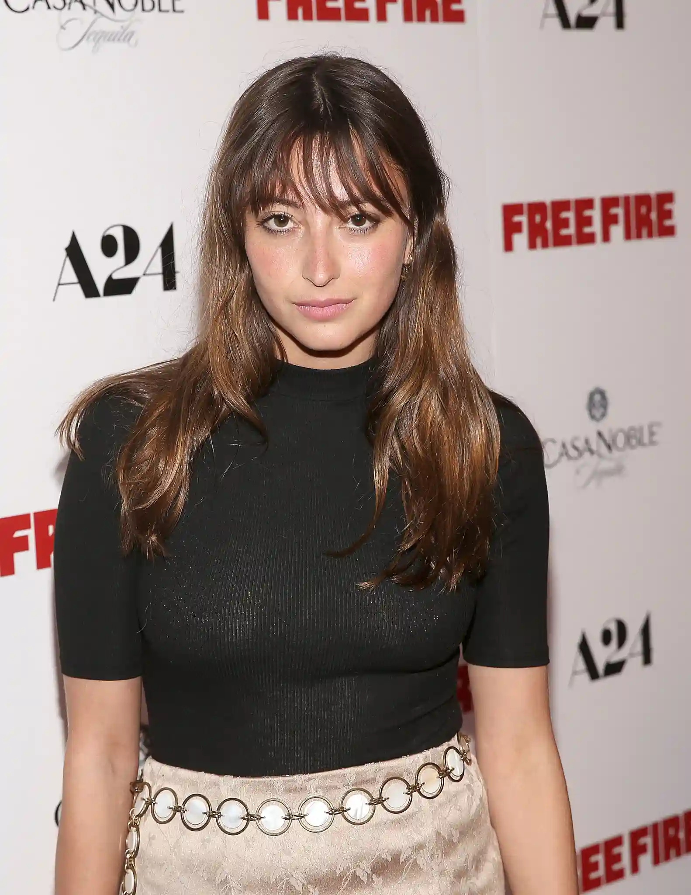

Teenage Cocktail2016
Annie and Jules feel trapped by their small town and the expectations surrounding them. As their relationship deepens, they make a risky plan to earn money and leave, only to discover that their choices bring unexpected danger and consequences.
Teenage Cocktail (2016)
A Risky Plan Takes a Dark Turn
Teenage Cocktail is a 2016 American independent thriller written and directed by John Carchietta. Annie Fenton and Jules Rae are two young women who feel constrained by their small-town lives and decide to run away together. To fund their escape, they pursue an online venture that initially seems lucrative, but their new circumstances lead them into a dangerous encounter. The film blends coming-of-age drama, relationship tension and suspense, exploring how a seemingly simple plan can spiral beyond the characters’ control.
Teenage Cocktail Cast



More Like This